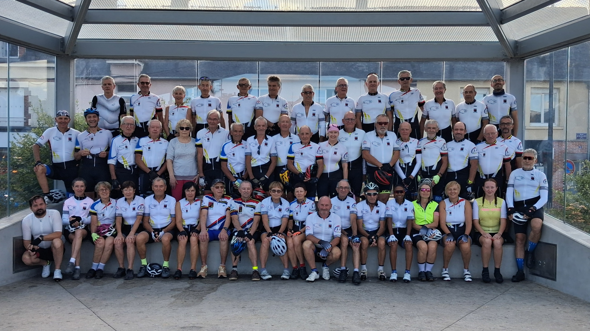
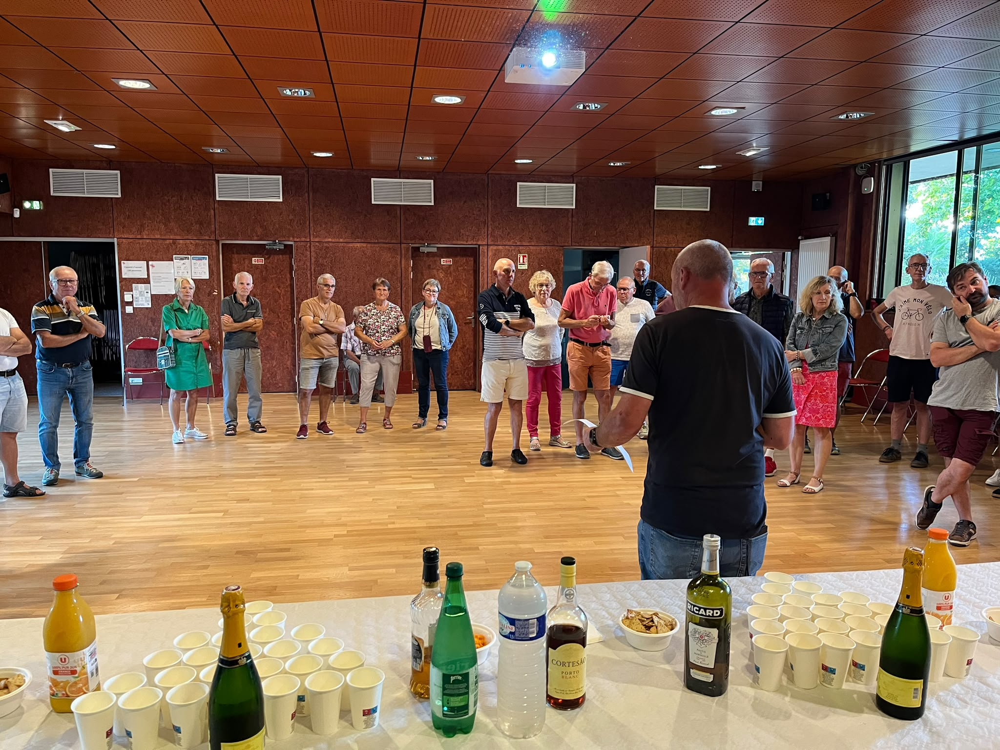

La rentrée 2026 de la Bicyclette Bruzoise
Le samedi 12 septembre, les adhérentes et adhérents de La Bicyclette Bruzoise se sont retrouvés pour une journée de rentrée placée sous le signe du vélo, de la convivialité et du plaisir d'être ensemble.
Une photo de groupe pour lancer la saison
Dès 13 h, le rendez-vous était donné sous le kiosque de Bruz, place du Docteur Joly. Membres de longue date, nouveaux adhérents étaient réunis pour immortaliser la rentrée et garder un souvenir de cette saison 2026.

Cette photo résume bien l'esprit du club : des amies et des amis de vélo, des sourires, de la bonne humeur et surtout le plaisir de se retrouver et de partager de bons moments. Une pensée également pour toutes celles et ceux qui n'ont pas pu être présents ce jour-là : d'autres occasions ne manqueront pas de nous réunir.
Les traditionnelles sorties du samedi
Une fois la photo réalisée, chacun a rejoint son groupe pour les sorties habituelles du samedi. Guidés par les capitaines de route, les nouveaux adhérents ont ainsi pu découvrir le fonctionnement des groupes et quelques-uns des circuits empruntés régulièrement autour de Bruz.
Un apéritif pour prolonger la journée
En fin de journée, rendez-vous était donné à la Maison des Associations pour un apéritif convivial ouvert aux adhérents et à leurs conjoints. Le moment s'est prolongé autour d'un pique-nique, dans une ambiance chaleureuse et détendue.
Merci à toutes et à tous pour votre présence, votre bonne humeur et votre fidélité au club. Nous espérons que ces images vous laisseront un joli souvenir de cette journée et de la saison 2026. À très bientôt sur nos vélos !
